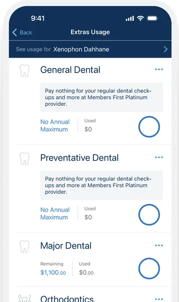
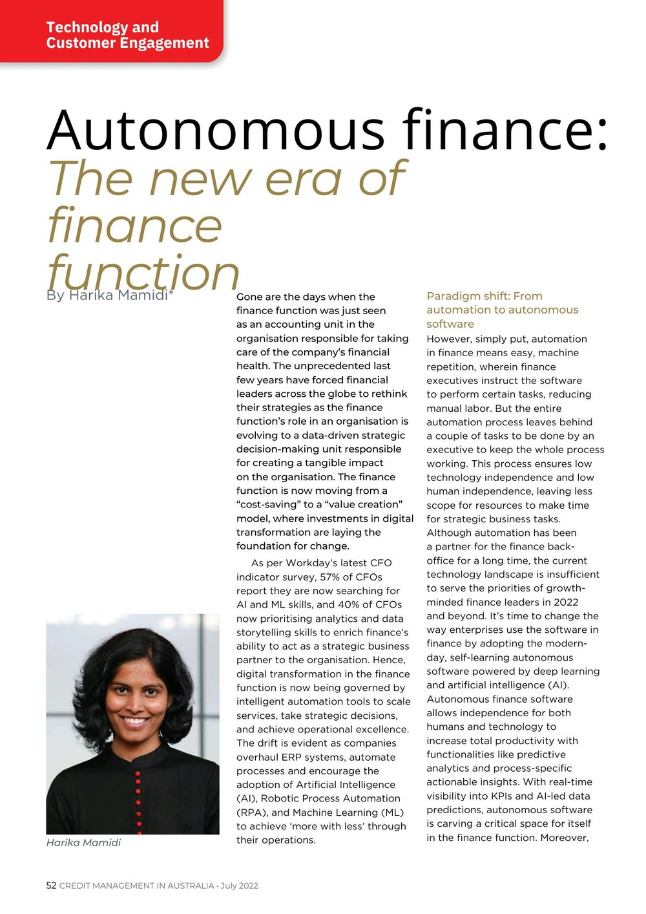

Case studies
Numbers first, and a short story behind each. Enough to get a feel for the work.
01
Hayylo / B2B SaaS, Aged Care / 2024 — 2025
I was hired to grow the business into enterprise, and within a month I could see that growth wasn't the stage we were actually at. The product was slow and riddled with tech debt, and the client that made up a third of our revenue was at real risk of walking — chasing enterprise on top of that would have been loading a ship that was already taking on water. So I made the case that we patch the leaks before growth was even a conversation, and pivoted the strategy to protect the revenue we had and get the product genuinely ready for enterprise instead of just sold as ready.
02
Bupa Australia / Healthcare / 2016 — 2020
Four million members, a dated estate, and a like-for-like brief. Once I had earned the trust, I reframed it: don't migrate what no longer matters. Rebuilt the website and app on new technology, and gave members visibility of their remaining benefits. That work was nominated for Bupa's global awards.

03
HighRadius / US Fintech / 2022 — 2024
Rehired nine years after my first stint to open ANZ from zero: one seat across product, marketing, and sales. I held full price on the market's first deal against internal pressure to discount, and read the region's pace against imported targets. The buyers I left at budget approval called me after I had gone, and closed.
Read my article, published in Credit Management in Australia →
The through line
Across all three, the work was the same: read the real situation, name what it costs, and make the call. If that's the kind of product leadership you're after, let's talk.
Connect on LinkedIn